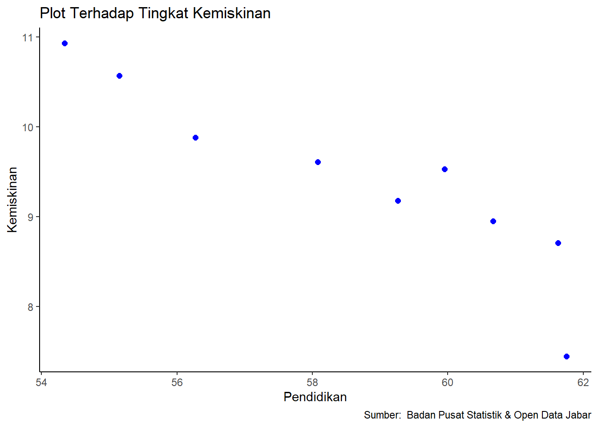

Analisis Pengaruh Tingkat Pendidikan Terhadap Tingkat Kemiskinan Di Provinsi Jawa Barat Tahun 2010-2018
Metode Penelitian Politeknik APP Jakarta
Author
Nabila Zulfa Ramadhani (220204172)
Published
January 24, 2024
Politeknik APP Jakarta
1 PENDAHULUAN
1.1 Latar Belakang
Indonesia sebagai negara berkembang, menghadapi tantangan besar terkait isu kemiskinan yang menjadi fokus utama dalam upaya pembangunannya. Beragam pandangan mengenai kemiskinan menunjukkan bahwa fenomena ini memiliki dimensi yang kompleks, membuat pengukurannya menjadi tugas yang tidak mudah. Meskipun demikian, pengukuran kemiskinan sangat penting sebagai gambaran dan dasar untuk merumuskan kebijakan penanggulangan kemiskinan (Bank, 2020).
Kemiskinan telah menjadi tantangan yang berkelanjutan sepanjang sejarah manusia, memengaruhi berbagai aspek kehidupan masyarakat. Bagi mereka yang termasuk dalam golongan miskin, kemiskinan menjadi realitas yang nyata dalam kehidupan sehari-hari, mempengaruhi kemampuan mereka untuk menjalani hidup dengan standar yang layak (Suliswanto, 2010). Kemiskinan didefinisikan sebagai kondisi di mana individu atau kelompok, tanpa memandang jenis kelamin, tidak memiliki hak dasar untuk menjaga dan meningkatkan kehidupan yang layak. Menurut Rusdarti & Sebayang (2013), kemiskinan membatasi kemampuan individu untuk tetap sehat dan mengembangkan keterampilannya, menjadikannya sebagai masalah yang langgeng dalam pembangunan.
Kemiskinan merupakan masalah multidimensi yang terkait dengan dimensi sosial, ekonomi, budaya, politik, spasial, dan temporal. Kemiskinan didefinisikan sebagai kondisi di mana individu atau kelompok, baik laki-laki maupun perempuan, tidak memiliki hak dasar untuk menjaga dan meningkatkan kehidupan yang layak (Alcock, Haux, May, & Wright, 2016). Dalam konteks Indonesia, salah satu provinsi yang menghadapi peningkatan tingkat kemiskinan adalah Jawa Barat, yang masuk dalam lima provinsi dengan tingkat kemiskinan tertinggi pada tahun 2020. Peningkatan jumlah pengangguran di Jawa Barat diidentifikasi sebagai penyebab utama meningkatnya tingkat kemiskinan (Sadono, 2010).
Pengangguran, sebagaimana disebut oleh Todaro & Smith (2011), menyebabkan penurunan pendapatan masyarakat, yang pada akhirnya mengurangi tingkat kemakmuran yang telah dicapai dan menciptakan masalah kemiskinan. Faktor lain yang berkontribusi pada peningkatan tingkat kemiskinan adalah rendahnya tingkat pendidikan. Teori pertumbuhan modern menekankan peran pemerintah, khususnya dalam meningkatkan modal manusia melalui pendidikan, untuk meningkatkan produktivitas dan pertumbuhan ekonomi. Pendidikan dianggap sebagai kunci penggerak pembangunan masa depan, dan pengabaian terhadap pendidikan dapat menyebabkan keruntuhan bangsa (Todaro & Smith, 2011).
Hubungan antara pendidikan dan kemiskinan sangat signifikan, karena tingkat pendidikan yang lebih tinggi berkontribusi pada peningkatan keterampilan dan, akhirnya, produktivitas kerja yang lebih tinggi (Astrini, Myanti, & Purbadharmaja, 2013). Oleh karena itu, pendidikan perlu mendapatkan perhatian khusus dalam mengatasi ketidakpahaman dan disparitas sosial-ekonomi. Dengan latar belakang ini, artikel ini bertujuan untuk mengkaji lebih dalam pengaruh tingkat pendidikan terhadap tingkat kemiskinan di Provinsi Jawa Barat dari tahun 2010 hingga 2018
1.2 Ruang Lingkup
Dalam artikel ini akan diberikan batasan yang akan mencakup tentang tingkat pendidikan berpengaruh terhadap tingkat kemiskinan di provinsi Jawa selama 9 tahun terakhir dan ruang lingkup penelitian ini yang hanya menggunakan data dalam kurun waktu 9 tahun (dari tahun 2010 sampai dengan tahun 2018). Kegiatan pengambilan data diperoleh melalui web Badan Pusat Statistik provinsi Jawa Barat.
1.3 Rumusan Masalah
Berdasarkan uraian latar belakang masalah diatas, maka terdapat beberapa indikator yang menjadi rumusan masalah dalam penelitian ini. Adapun rumusan masalah tersebut adalah :
Apakah tingkat pendiikan berpengaruh terhadap tingkat kemiskinan di provinsi jawa barat?
1.4 Tujuan Penelitian
Berdasarkan uraian latar belakang, maka dapat disimpulkan Penelitian ini bertujuan untuk mengetahui apakah tingkat pendidikan di provinsi Jawa Barat memiliki pengaruh terhadap tingkat kemiskinan di Jawa Barat.
1.5 Manfaat Penelitian
Manfaat dari artikel ini yaitu agar dapat menyebarkan pengetahuan dan informasi terkini dan memberikan rekomendasi untuk langkah-langkah lanjutan dalam meningkatkan tingkat pendidikan di Provinsi Jawa Barat sebagai strategi efektif untuk mengurangi tingkat kemiskinan. Implementasi kebijakan yang berkelanjutan dan kolaborasi antara pemerintah, sektor swasta, dan masyarakat menjadi kunci dalam menciptakan perubahan positif menuju kesejahteraan yang lebih baik di Provinsi Jawa Barat.
1.6 Package
Packages yang digunakan sebagai berikut:
library(tidyverse)
── Attaching core tidyverse packages ──────────────────────── tidyverse 2.0.0 ──
✔ dplyr 1.1.4 ✔ readr 2.1.4
✔ forcats 1.0.0 ✔ stringr 1.5.1
✔ ggplot2 3.4.4 ✔ tibble 3.2.1
✔ lubridate 1.9.3 ✔ tidyr 1.3.0
✔ purrr 1.0.2
── Conflicts ────────────────────────────────────────── tidyverse_conflicts() ──
✖ dplyr::filter() masks stats::filter()
✖ dplyr::lag() masks stats::lag()
ℹ Use the conflicted package (<http://conflicted.r-lib.org/>) to force all conflicts to become errors
library(readxl)library(WDI)
2 STUDI PUSTAKA
2.1 Kemiskinan
Kemiskinan merupakan permasalahan yang senantiasa dihadapi oleh manusia. Permasalahan ini sudah ada seiring dengan eksistensi masalah kemanusiaan itu sendiri, dan konsekuensi dari kemiskinan dapat mencakup seluruh aspek kehidupan manusia, meskipun seringkali tidak disadari sebagai masalah oleh individu yang mengalaminya. Bagi mereka yang hidup dalam kondisi miskin, kemiskinan bukanlah sekadar konsep, melainkan realitas yang dapat dirasakan dalam kehidupan sehari-hari. Hal ini diungkapkan oleh Sulistyanto (2010) seperti yang dikutip dalam penelitian Islami (2013).
Penyebab mendasar dari kemiskinan adalah kurangnya pendapatan dan ketersediaan sarana serta prasarana untuk memenuhi kebutuhan dasar seperti makanan, pakaian, tempat tinggal, layanan kesehatan, dan pendidikan. Salah satu indikator umum yang digunakan untuk mengukur kemiskinan adalah rendahnya pendapatan, karena pendapatan mencerminkan standar kehidupan aktual masyarakat. Standar hidup sebenarnya mencerminkan tingkat kesejahteraan masyarakat, sehingga pendapatan dapat dianggap sebagai indikator tingkat kesejahteraan masyarakat (Mubyarto, 1996). Meskipun demikian, tingkat pendapatan masyarakat tidak akan mencapai hasil maksimal tanpa didukung oleh sumber daya manusia yang berkualitas.Oleh karena itu, peningkatan kualitas sumber daya manusia harus menjadi prioritas utama bagi pemerintah dalam upaya mengatasi kemiskinan. Meningkatkan kualitas sumber daya manusia dapat dicapai melalui peningkatan pendidikan dan kesehatan masyarakat, seperti yang diungkapkan oleh Andriani & Wahyudi (2015).
2.2 Pendidikan
Lelgeveld memberikan definisi bahwa pendidikan adalah usaha untuk membimbing, melindungi, dan memberikan bantuan yang tepat kepada anak didiknya, dengan tujuan agar mereka dapat mandiri dalam menjalani hidupnya tanpa bantuan orang lain. Londason Pendidikan menyatakan bahwa bimbingan, pengaruh, dan perlindungan yang diberikan dalam pendidikan harus mengandung nilai-nilai luhur sesuai dengan hakikat dan martabat kemanusiaan. Tujuan akhir pendidikan adalah membantu peserta didik menjadi cukup mampu untuk menjalani kehidupan mereka sendiri.
Dewey, seorang ahli pendidikan, menyatakan bahwa konsep pendidikan melibatkan pemahaman sebagai proses pengalaman, di mana kehidupan adalah pembelajaran, dan pendidikan berarti membantu pertumbuhan batin tanpa dibatasi oleh usia. Dewey menekankan bahwa kegiatan pendidikan pada dasarnya adalah proses pengalaman yang mengarahkan peserta didik menuju pertumbuhan batin, sehingga mereka dapat eksis di tengah-tengah lingkungan mereka dengan berbagai tantangan dan masalah tanpa selalu bergantung pada orang lain.Kedua pandangan dari Dewey dan Lelgeveld pada dasarnya memiliki tujuan yang sama, yaitu mencapai kemandirian peserta didik. Kemandirian diartikan sebagai kemampuan untuk hidup layak di tengah masyarakat tanpa harus tergantung pada orang lain.
3 METODE PENELITIAN
3.1 Data
Tahun
Index Pendidikan
Persetase Kemiskinan
2010
54,34
10,93
2011
55,15
10,57
2012
56,27
9,88
2013
58,08
9,61
2014
59,26
9,18
2015
59,95
9,53
2016
60,67
8,95
2017
61,63
8,71
2018
61,75
7,45
dat<-read_excel('data metopel.xlsx')library(ggplot2)ggplot(data=dat, aes(x=Pendidikan, y=Kemiskinan))+geom_point(color='blue', size=2)+labs(title="Plot Terhadap Tingkat Kemiskinan",x="Pendidikan",y="Kemiskinan",caption ="Sumber: Badan Pusat Statistik & Open Data Jabar") +theme_classic()

3.2 Metode analisis
Metode yang digunakan dalam penelitian ini adalah dengan menggunakan metode kuantitatif dengan pendekatan deskriptif, yang menjelaskan pengaruh variabel penelitian (Sugiyono, 2011). Metode pengumpulan data dalam penelitian ini yaitu dengan menggunakan data time series selama 9 tahun yaitu tahun 2010-2018 dari total keseluruhan Provinsi Jawa Barat, sumber data berupa data-data sekunder yang diambil dari Badan Pusat Statistik Provinsi Jawa Barat. Model analisis yang digunakan adalah analisis regresi linear berganda dan nilai koefisien determinasi. Penggunaan analisis ini bertujuan untuk mengetahui pengaruh antara variabel bebas terhadap variabel terikat.
4 PEMBAHASAN
4.1 Pembahasan masalah
Pada bagian ini dapat menampilkan data yang telah berhasil dikumpulkan :
Call:
lm(formula = Kemiskinan ~ Pendidikan, data = dat)
Residuals:
Min 1Q Median 3Q Max
-0.88902 -0.01712 0.02090 0.24311 0.57786
Coefficients:
Estimate Std. Error t value Pr(>|t|)
(Intercept) 29.37238 3.35065 8.766 5.06e-05 ***
Pendidikan -0.34062 0.05715 -5.960 0.000565 ***
---
Signif. codes: 0 '***' 0.001 '**' 0.01 '*' 0.05 '.' 0.1 ' ' 1
Residual standard error: 0.4478 on 7 degrees of freedom
Multiple R-squared: 0.8354, Adjusted R-squared: 0.8118
F-statistic: 35.52 on 1 and 7 DF, p-value: 0.0005645
Hasil di atas adalah hasil perkiraan OLS melalui penerapan model regresi multivariat. Hasil regresi tersebut dimanfaatkan untuk mengidentifikasi korelasi antara variabel dependen dan variabel independen. Variabel dependen yang digunakan adalah tingkat kemiskinan, sedangkan variabel independen yang diobservasi adalah tingkat pendidikan. Ditemukan bahwa setiap peningkatan 1 persen dalam tingkat pendidikan berkontribusi pada penurunan tingkat kemiskinan sebesar -0,34062.
Penggunaan nilai R² bertujuan untuk mengukur sejauh mana variabel independen memengaruhi variabel dependen. Dari tabel tersebut, nilai R² mencerminkan bahwa tingkat pendidikan memiliki dampak signifikan terhadap tingkat kemiskinan di provinsi Jawa Barat sebesar 0,8354 atau 83,54%. Ini berarti sekitar 83,54% dari variasi tingkat kemiskinan di provinsi tersebut dapat dijelaskan oleh tingkat pendidikan. Sementara itu, sekitar 16,46% sisanya dipengaruhi oleh faktor-faktor lain yang tidak dibahas dalam penelitian ini.
5 Kesimpulan
Berdasarkan hasil penelitian ini, dapat disimpulkan bahwa tingkat pendidikan memiliki dampak yang signifikan terhadap tingkat kemiskinan di provinsi Jawa Barat. Tingkat pendidikan, berperan sebagai variabel independen, memegang peran kunci dalam memengaruhi fluktuasi tingkat kemiskinan di wilayah tersebut. Penelitian ini menunjukkan bahwa proses pendidikan memiliki peran sentral dalam menentukan arah naik atau turunnya tingkat kemiskinan. Oleh karena itu, pemahaman mendalam tentang keterkaitan ini dapat menjadi dasar untuk merancang kebijakan ekonomi yang efektif, terutama dalam mengoptimalkan tingkat pendidikan sebagai elemen kunci dalam upaya menurunkan tingkat kemiskinan.
6 Referensi
Persentase Penduduk Miskin (Persen), 2010-2018 | Badan Pusat Statistik. (2018). Retrieved 24 January 2024, from https://jabar.bps.go.id/indicator/23/51/1/persentase-penduduk-miskin.html
Indeks Pendidikan Berdasarkan Provinsi di Indonesia | Open Data Jabar. (2018). Retrieved 24 January 2024, from https://opendata.jabarprov.go.id/id/dataset/indeks-pendidikan-berdasarkan-provinsi-di-indonesia
Berliani, K. (2021). Pengaruh Tingkat Pengangguran, Tingkat Pendidikan dan Laju Pertumbuhan Penduduk Terhadap Tingkat Kemiskinan Penduduk Provinsi Jawa Barat Tahun 2015-2020. Syntax Literate; Jurnal Ilmiah Indonesia, 6(2), 872.
Chairunnisa, N. M., & Qintharah, Y. N. (2022). Pengaruh Kesehatan, Tingkat Pendidikan, dan Upah Minimum terhadap Kemiskinan pada Provinsi Jawa Barat Tahun 2019-2020. Jurnal Penelitian Teori dan Terapan Akuntansi (PETA), 7(1), 147-161.
Suriansyah, A. (2011). Landasan pendidikan. Retrieved 24 January 2024, from https://scholar.google.com/scholar?hl=id&as_sdt=0%2C5&q=pendidikan+menurut+para+ahli&btnG=&oq=PENDIDIKAN+MENURUT#d=gs_cit&t=1705977978087&u=%2Fscholar%3Fq%3Dinfo%3Apwrx06ZVs5oJ%3Ascholar.google.com%2F%26output%3Dcite%26scirp%3D3%26hl%3Did